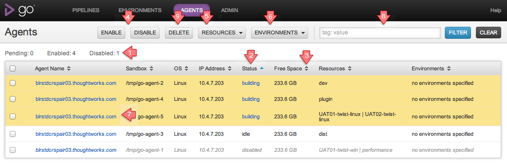
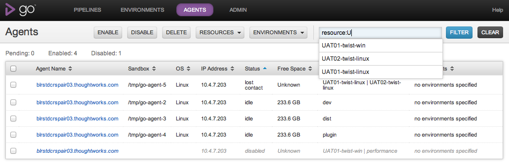

Agents
The Agents page lists all the agents available to the server and their current status.
When an Agent first connects to the Server it is 'Pending'. An administrator must enable the Agent before Go will schedule work on that agent.
Administrators can also disable agents. Go will not schedule work for a disabled Agent. If a job is building on the agent when it is disabled, that job will be completed; the agent is then disabled. An administrator will need to enable the Agent before it will again schedule work
Administrators can choose to delete an agent which is no longer required. The agent must be disabled before it can be deleted. An agent in a disabled(building) or disabled(cancelled) state cannot be deleted.
Key
- Find out how many agents are pending, enabled and disabled.
- Status is sorted by default. The order of sort is pending, lost contact, missing, building, idle, disabled, cancelled.
- Click on a column header to sort by that column.
- To enable or disable agents, first select the agents that you are interested in. Then click the 'ENABLE' or 'DISABLE' button. If you try to disable an agent that is already disabled, or enable an agent that is already enabled, Go will ignore that change.
- To associate a resource with an agent, first select the agents you are interested in. Then click the 'Resources' button. You are now able to associate new or existing resources with your agents.
- To associate an agent with an environment, first select the agents you are interested in. Then click the 'Environments' button. You are now able to associate your agents with an environment.
- Admin users can click here to get to the Agent details of the given agent
- Filter the agents list. See the section below.
- To delete agents, first select the agents that you are interested in. Then click the 'DELETE' button. If you try to delete an agent that is in disabled(building) or disabled(cancelled), Go will not delete that agent.
Filtering Agents
Since the agent list can become very long, it is useful to be able to filter it by various criteria. The Filter option provides this functionality.
- Format: tag:value
- Supported tags: ip, resource, os, name, status, environment
- Supported values: Free form text. After you specify a tag, enter a value. Go only displays agents containing the entered value.
- The sort function will work with filtered lists.
- Entering a tag:value combination that does not match any agents will result in an empty result set being displayed.
- If you want to see only missing agents, enter "status:missing".
- If you want to see only agents with resource names containing "java", enter "resource:java".
Autocompletion
Go support autocompletion of searches. After you specify a tag, Go suggests possible values for the tag, based on the exsting values entered. You can choose an appropriate value from the autocompletion list and then search.
A maximum of 10 results is displayed for autocomplete, irrespetive of the number of actual matches. For best results, ensure sufficient text is entered to narrow down the number of matches
Exact search
Even with autocomplete, there are some limitations to the search criteria.
For example resource:windows matches both "windows" and "windows2k3", though you may have wanted an exact match on "windows". This is because, the current filter is a wildcard search rathern than a token search
Exact search addresses this problem. The way to do exact search is to use quotes ("") to specify the values. e.g. resource:"windows" will filter and return only those agents whose names are "windows" and nothing else.
You cannot combine autocomplete and exact search. Once you specify the values in quotes, autocomplete will be turned off